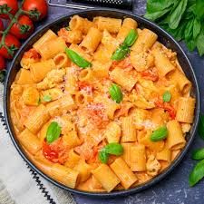

Tomato-basil-pasta

Tomato-basil-pasta
It shows a creamy tomato basil pasta with some chicken present in it.
Ingridients:
- pasta
- crushed tomatoes
- heavy cream
- torn basil
- olive oil
Steps:
- Bring a large pot of salted water to a boil and cook 400g of your favorite pasta (like penne or spaghetti) according to package directions. Reserve \(\frac{1}{2}\) cup of pasta water, then drain.
- Heat 2 tablespoons of olive oil in a large pan over medium heat. Add 3 minced garlic cloves and cook until fragrant.
- Pour in 1 can (400g) of crushed tomatoes, season with salt and red pepper flakes, and let it simmer for 5 minutes.
- Toss the cooked pasta into the pan, adding a splash of the reserved pasta water if the sauce is too thick.
- Serve immediately topped with grated parmesan cheese and fresh basil.
Home